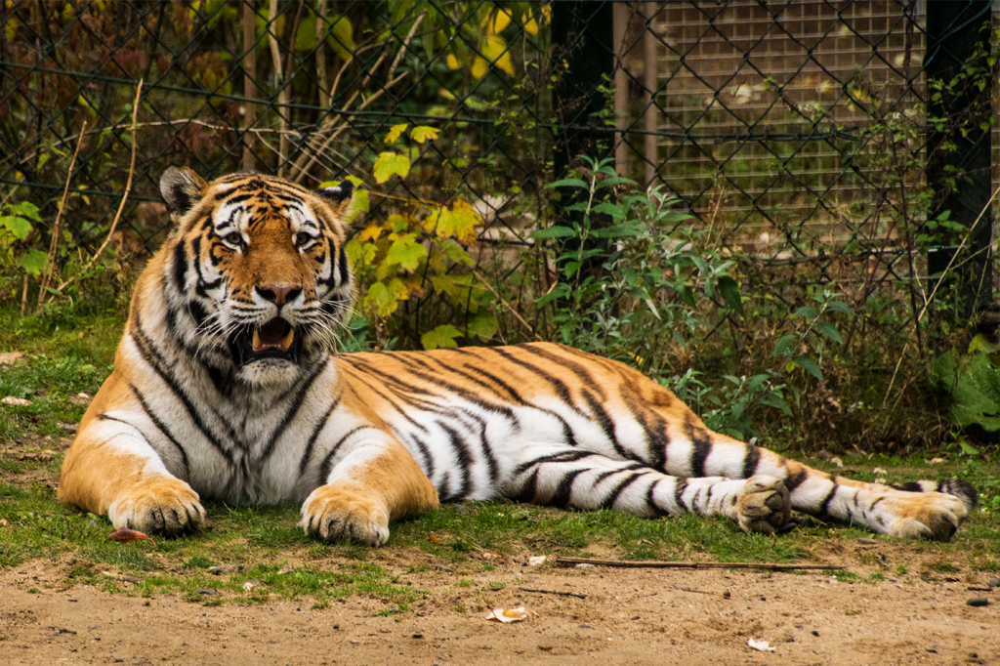
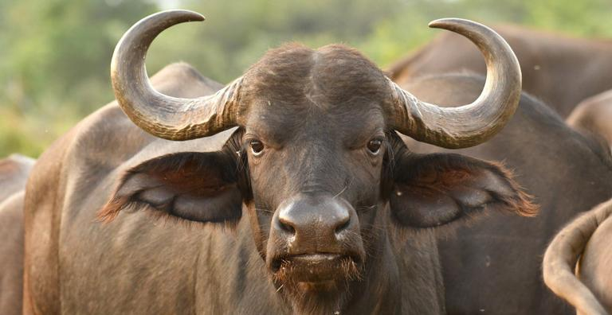

Tigre
Panthera tigris
| Reino: | Animalia |
| Classe: | Mammalia |
O tigre [feminino: tigresa] (nome científico:
Panthera tigris) é um mamífero carnívoro da família dos felídeos, que habita o continente asiático.
Dentre suas subespécies é o maior entre todos os felinos selvagens do mundo. São animais extremamente
territoriais e solitários. Classificado como um Superpredador, o tigre é o terceiro maior carnívoro
terrestre, atrás apenas do Urso-polar e do Urso-de-Kodiak.
É o felino com maior variação de tamanho do mundo entre subespécies, com o
tigre-siberiano alcançando até 310 kg enquanto o tigre-de-bali alcançava no máximo 100 kg; tamanho
comparável a suçuaranas e leopardos. Algumas estimativas sugerem que existem menos de 2500 indivíduos
reprodutores maduros, com nenhuma subpopulação com mais de 250 indivíduos reprodutores maduros. A população
era estimada em 100.000 indivíduos no início do século XX. Em tempos atuais, entretanto, apenas cerca de
4.000 indivíduos sobrevivem, uma queda de 97%.
Tigres já foram encontrados da Turquia a Sibéria e da ilha de Java a Índia. Hoje em
dia estão restritos principalmente a algumas regiões do Sudeste Asiático, Sibéria e Índia. Três das
subespécies estão extintas: o tigre-do-cáspio (encontrado em certas regiões da antiga União Soviética,
Turquia, Oriente Médio, Afeganistão e Mongólia), tigre-de-java (encontrado em Java) e tigre-de-bali (que era
encontrado apenas em Bali).
É um dos animais mais carismáticos do mundo, sendo símbolo da conservação da
natureza e um dos animais mais populares. É o animal símbolo de diversos países da Ásia e mascote de
diversas empresas em todo o mundo.
Touro
Bos taurus
| Reino: | Animalia |
| Classe: | Mammalia |
Gado-bovino-doméstico (nome científico: Bos
taurus) é uma espécie de bovino do gênero Bos e da ordem Artiodactyla. É um
mamífero ungulado e apresenta dois dígitos (dedos) em cada membro.
O macho da espécie recebe o nome de boi, ou touro,
enquanto que a fêmea é conhecida por vaca e o animal jovem por bezerro, e
depois novilho.
A espécie é um ruminante, ou seja, regurgita o alimento para a boca após sua
ingestão, onde é novamente mastigado e deglutido. O estômago dos ruminantes é dividido em retículo, rúmen,
omaso e abomaso.
Essa espécie foi domesticada pelo homem e é utilizada em larga escala em muitas
atividades como a produção de carne e de leite, representando grande importância para a economia de muitos
países.